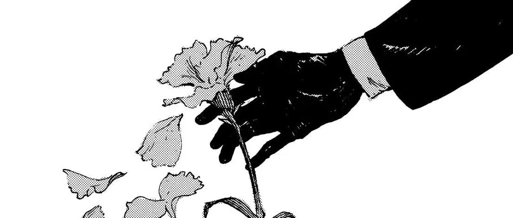

My mind has been very weird lately. It's not unstable in the bipolar, or BPD sense, but its more unstable in an unraveling or reintegration sense? Oh the human psyche intrigues me to this day. I'm getting my memories back, and everything feels, right, again. I still have that sting, that longing, that subtle despair, however things just feel right instead of wrong/bad now. Even as the cool crisp air from the cold front touches my skin, it just feels right. Tbh I haven't felt this whole array of feelings since October 2017.... Maybe it is just calmness, maybe it is something more. Have I finally reached peace within my despair, again? That would be nice. At the risk of psychosis again, I feel as if it is something more. As if my Aura has been energized and "re-initialized", if I had to get metaphysical with what I am feeling. I always thought I was robbed of this feeling due to being unhealthy, with caffeine and nicotine, but I cut both of those and this feeling never rose again... I always felt empty, drained, negative, or rather null. I just know everything is going to work out for me. I cannot see land, but I can hear the seagulls and see a faint ray of light in the fog... This is very hard to quantify as it is intertwined and complex within my various mental planes. I can subtly feel music again... I can subtly enjoy things, if only brief, again. I'm thinking about re-playing the games I was obsessed with in 2013-2017 again, such as Slender: The Arrival, Eerie, Amnesia, and more. Maybe that will unlock some more memories! I do remember playing them with an IRL, good friend of mine, B, cant forget E and C though. Oh I miss those days as well... Being obsessed over the occult, ghosts, the paranormal, aliens, etc while just being scared of if the "Rake" was outside our windows... What ever went wrong? Was it merely age? Did we grow out of that too soon?.. Maybe it was my fault by starting to really be reclusive and prioritizing my online friends over irl.. Then again he did turn to drugs and chose other people over me, and I waited for years for the old him to come back. I think the last good memories we had, before the split, was us playing League and getting a very good kda! Talon and Ashe are still OP, I hope. Good times. Good, this feeling is still here, like a cool, gentle hug on my skin. I was worried it mightve disappeared by time this post had finished, but no, it is still as strong! I rarely get good things in my life, and I hope this means my good emotions are returning soon. That would be nice, to feel and enjoy things again as I once did. My amygdala isn't even stimulated as it was between 2022-early 2025... That too has relaxed!
